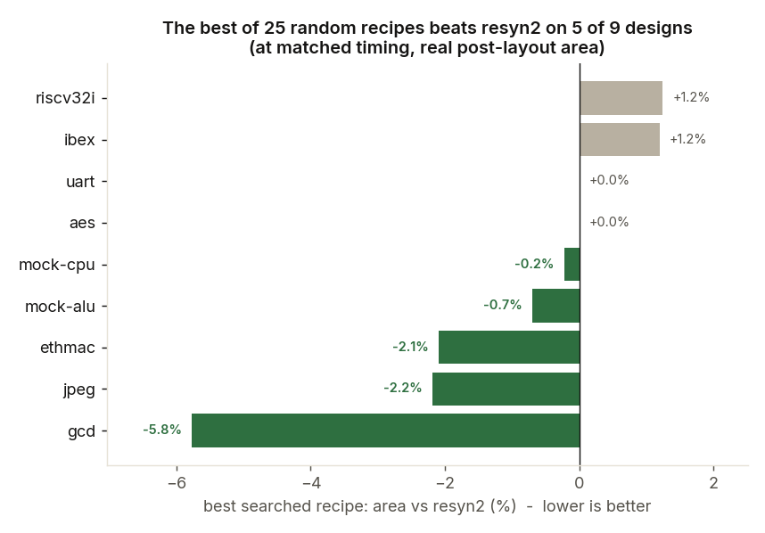
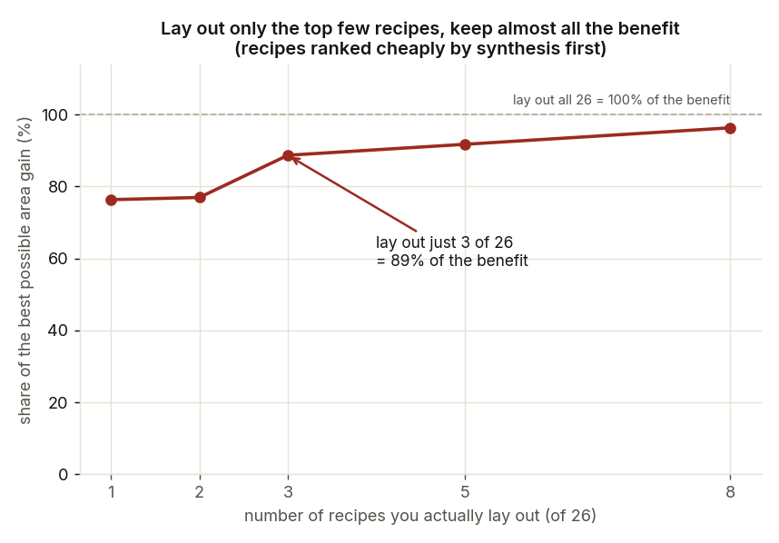

1 · Background
How a chip gets designed
You do not draw a modern chip by hand. You describe what it should do in code, and a pipeline of software tools turns that description into the physical layout that gets manufactured. Here is that pipeline, simplified:
2 · The question
Every design gets the same recipe
TakeawayEvery design gets the same fixed 10-step recipe, resyn2, though there are over 280 million possible 10-step recipes.
Logic synthesis optimizes your logic one small step at a time, following a recipe. Yosys hands this job to Berkeley’s logic optimizer, and the recipe never changes: a tiny controller and a large processor get exactly the same steps. The best-known recipe is resyn2, a hand-tuned sequence of the optimizer’s classic transforms. I built new recipes from those same transforms, so resyn2 is the one to beat.
3 · First attempt
Machine learning optimized the wrong score
TakeawayMachine learning models trained on gate count got better at gate count, but on a real chip that shortcut did not hold up.
I started with machine learning: train models to choose and judge recipes. Training needs thousands of scored attempts and a real chip layout takes minutes to an hour, so I scored recipes with a shortcut: gate count, which takes milliseconds.
A reinforcement learning agent
Reinforcement learning trains an agent by trial and error. Here, each attempt builds one recipe, one step at a time. At each step the agent sees a short summary of the logic: how big and how deep it started, how much of that is left, how far into the recipe it is, and which transform it picked last. It picks one of the 7 transforms, the optimizer applies it, and the agent is rewarded by the share of gates that step removed. After 12 steps the recipe is done, and over thousands of attempts the agent shifts toward the choices that paid off.
I trained it with PPO (Proximal Policy Optimization, a standard reinforcement learning method) from Stable-Baselines3, on two small designs, gcd and uart. On gcd it settled into a repeating three-step pattern (refactor, rewrite -z, resub). Its recipes removed about 2% more gates than resyn2, on both training designs and on aes, a design it had never seen. To check whether the learning was actually helping, I compared it with no learning at all: 60 random recipes per design. The best random recipe removed more gates than the agent’s on all three, so on gate count, training had not taught it anything random sampling could not find.
Then I laid out three recipes for each design on a real chip: resyn2, the agent’s, and the random recipe with the fewest gates. The gate count stopped telling the story:
| Lower is better | resyn2 | The agent | Best of 60 random |
|---|---|---|---|
| gcd | |||
| Gate count (the shortcut) | 357 worst | 350 | 349 best |
| Real chip area (square micrometers) | 59.5 best | 64.1 worst | 63.3 |
| Timing: picoseconds late | 20.8 worst | 3.6 best | 10.1 |
| uart | |||
| Gate count (the shortcut) | 700 worst | 687 | 669 best |
| Real chip area (square micrometers) | 115.1 worst | 109.6 best | 112.3 |
| Timing: picoseconds late | 24.1 best | 32.2 | 38.8 worst |
The shortcut said the agent beat resyn2 on both designs, and that the random recipe beat them both. The real chip disagreed. The gate-count winner, the random recipe, was not best on anything that matters. The agent gave a different trade on each design: gcd got bigger but faster, uart smaller but slower. Gate count cannot see that trade. Both were measured before the matched-timing clocks existed, at clocks where even resyn2 missed timing, so this is a warning sign rather than a proof.
Summary. The agent learned to optimize the gate-count shortcut, yet an untrained random baseline optimized it more effectively, and gains on the shortcut did not carry over to the full chip layout. The study therefore exposed two limitations. The objective was a poor stand-in for physical quality, and the agent’s view of the logic, a handful of summary statistics, was too coarse to support informed choices. The two studies that follow address the second limitation while keeping the gate-count objective.
A graph neural network that reads the logic graph
The agent only ever saw a few numbers about the logic, never the logic itself. A graph neural network can read it directly: every gate is a node, every wire is an edge, and the network learns from the pattern of connections. I trained one to answer a narrower question: given a graph, how much would resyn2 still shrink it?
My first version answered that question in gate counts: given a graph, predict how many gates it would have after resyn2. To tell whether the network was learning anything, I compared it with the simplest possible rule: predict the final count from the graph’s current size alone. That rule was very hard to beat. On these real designs resyn2 removes only about 1 to 3% of the gates, so a graph’s size alone predicts its final count to within about 2%. The network, trained on just four designs, memorized them instead of learning anything general. Tested on a fifth design it had never seen (jpeg), its predictions were typically off by a factor of about 5, while the simple rule was off by under 3%.
So I changed the question to one that size cannot answer: what share of the graph would resyn2 remove? I also built 8 small test designs with very different structures (deep arithmetic, wide multiplexers, long comparison chains and more), each at 3 sizes. Now structure mattered, with the share ranging from 0% to 47%, and the network had something real to learn. Here are both versions side by side:
Summary. The graph model shows that a circuit’s structure carries real, learnable information about how far it can be optimized. Once the question changed from a gate count, which size alone predicts, to a share, which size cannot predict, the model beat the baseline by a wide margin and kept that advantage on larger versions of familiar designs. Its failure on an unseen structure type marks the limit: the model generalizes across scale, not across kinds of logic, so it needs training data that covers the structures it will meet. A reliable judge of graphs raised the next question: could it also choose the steps?
Letting that model choose the steps
A model that judges graphs well could, in principle, choose the steps: at each step, try all 7 transforms, ask the model how good each resulting graph is, keep the best, and repeat. To check whether the model added anything, I ran the same loop with a plain scorer that simply counts the gates of each result.
The model-guided picker failed, and the reason is subtle. The model predicts where a graph can end up, and every graph along the way to that end looks about the same to it. Its scores for the 7 options barely differ, so it cannot tell a real step forward from a step that did nothing, and it often keeps the one that did nothing.
Here are both pickers against resyn2 on the eight test designs:
| Gates after the recipe (lower is better) | resyn2 | Plain picker | Model-guided picker |
|---|---|---|---|
| Designs with room to improve | |||
| Adder chain | 2,847 | 2,714 best | 3,130 worst |
| Comparison tree | 3,090 worst | 3,055 best | 3,056 |
| Multiplier | 2,596 | 2,595 best | 2,604 worst |
| Decoder | 1,022 best | 1,022 best | 1,532 (stuck) worst |
| Shift register with feedback | 73 best | 73 best | 136 (stuck) worst |
| Already as small as they get: every method ties | |||
| Multiplexer tree | 6,096 | 6,096 | 6,096 |
| Crossbar switch | 5,760 | 5,760 | 5,760 |
| Exclusive-or tree | 4,512 | 4,512 | 4,512 |
The eight test designs are the largest size of each structure type, which the model had not trained on.
The model-guided picker got stuck on two designs, the decoder and the shift register, repeating a step that changed nothing, and finished worse than resyn2 on four of the eight. The plain picker matched or beat resyn2 on all eight, by up to 4.7% on the adder chain. Three designs were already as small as they get, so every method tied.
Summary. Judging a graph and choosing a step are different tasks. The model was a good judge of where a graph could end up, but it gave no signal about which step makes progress now, while a direct measurement did. When a measurement is this cheap, it beats a prediction. A learned model earns its place only where measuring each option is too expensive, such as a full chip layout.
Three lessons that shaped the rest of the project
- Grade on the real chip. The recipe with the fewest gates won nothing on the real chip, and the agent’s gate-count gains became a different trade between area and timing on each design. So from section 4 on, every result is confirmed by a full layout.
- Measure before you predict. The plain picker, which measured every option, beat the model-guided picker on every design with room to improve. So the cheap score that later made the search affordable (section 5) is a direct measurement, not a learned model.
- Win one design at a time first. The graph model worked only on structures it had trained on, and a handful of real designs could not cover the structures a new design might contain. So the next question was narrower: graded on the real chip, can resyn2 be beaten at all, one design at a time?
4 · Second attempt
One design at a time: a better recipe for 5 of 9
TakeawayGraded on full layouts at matched timing, a sample of 25 random recipes beat resyn2 on 5 of 9 designs, with up to 5.8% less area.
So I set machine learning aside and asked a simpler question of each design: does a better recipe than resyn2 exist at all? I drew 25 recipes at random from the space of possible recipes and graded every one on a full chip layout through sign-off, not on gate count. For each design, the best recipe is simply the one with the smallest area that still meets timing.
Keeping the comparison fair: matched timing
A slower clock lets the tools build a smaller chip, so area alone can be gamed. Every recipe on a design therefore runs at one clock: resyn2’s speed limit, the fastest clock at which it still meets timing. A recipe wins only if it also meets timing there and uses less area. Leaving headroom does not help, because with a looser clock the tools stop working as hard and use it up. On aes (an encryption core), loosening the clock from 388 to 430 picoseconds made resyn2 miss timing it had met.
Graded this way, the best of 25 random recipes beats resyn2 on 5 of 9 designs, with up to 5.8% less area.

5 · The cost
A quick estimate cuts the layouts from 26 to 3
TakeawayPost-synthesis area takes seconds to measure and ranks recipes well enough that laying out only the top 3 of 26 captures 89% of the available gain.
A single win is one thing; a method you would actually use is another. A full layout takes from a minute to an hour, so grading all 26 candidates per design (the 25 random recipes plus resyn2) on a real chip is expensive: close to a day of compute for the largest design. There are three ways to score a recipe, and only one is both fast and reliable.
Counting gates is the cheapest signal, but section 3 showed it can point the wrong way. The signal used here costs a little more: the recipe’s post-synthesis cell area, the total area of the real library cells once synthesis has mapped the logic onto them. It takes seconds instead of milliseconds, still far less than a layout, and it tracks the final area after layout closely, with a rank correlation of 0.79. So rank the candidates by that area, and pay for a full layout on only the most promising few.

6 · The final method
Steering the search with the cheap score
TakeawayA search steered by the cheap score found smaller recipes on 3 of the 4 hardest designs and one new win, on riscv32i. Timing decided every outcome.
Random sampling is blind: it never learns from the recipes it has already graded. But the post-synthesis score takes seconds, so a search can afford to score hundreds of recipes and improve as it goes. I used a genetic algorithm: keep the best-scoring recipes, mix pieces of them together, change a few steps at random, and repeat. When the search ends, the 3 recipes with the best scores from any round get a full layout, as a final check.
What happens in each round
- Score. Synthesize all 20 recipes and measure each one's post-synthesis area. Smaller is better.
- Keep. The best 5 move on to the next round unchanged, so a good recipe is never lost.
- Mix. Build the other 15 from pairs of strong parents (each parent is the best of 3 recipes picked at random). Cut each parent's step list at a random point, then join the front of one to the back of the other. The search does not know which pieces are good: most new recipes come out worse and are scored out in the next round, while the lucky combinations survive and pass their pieces on.
- Mutate. Change the new recipe a little at random: drop a step, insert a step, or swap one step for another. This keeps the search trying things neither parent had.
Press Play to watch one round of the search, or Next to go one step at a time.
I pointed it at the four hardest designs: aes (an encryption core), uart (a serial-port controller), and ibex and riscv32i (two small processor cores). They are hard because almost every recipe fails timing on them. Of the 25 random recipes tried on each, only 1 to 4 met timing at all, and none of those beat resyn2’s area. On ibex and riscv32i, even resyn2 itself misses timing at that clock.
The bar for a win did not change: after a full layout, a recipe must meet timing and use less area than resyn2. On each design the search ran 12 rounds of 20 recipes, and I laid out its top 3:
| Design | resyn2 | Search’s best pick: area | Its timing |
|---|---|---|---|
| riscv32i | 9.4 picoseconds late | 0.8% smaller | 11.5 picoseconds to spare |
| aes | 1.3 picoseconds to spare | 5.0% smaller | 3.6 picoseconds late (0.9% of the clock) |
| uart | 1.3 picoseconds to spare | 4.6% smaller | 10.0 picoseconds late (3.4% of the clock) |
| ibex | 32.3 picoseconds late | 0.2% larger | 79.6 picoseconds late (8.0% of the clock) |
The best pick is the laid-out recipe that came closest to winning. A near miss is smaller than resyn2 and late by less than 1% of the clock period. Timing is pass or fail at sign-off, so a near miss does not count as a win, but a miss that small may be closable with later timing repair.
Summary. Steering the search with the cheap score found recipes smaller than resyn2 on three of the four hardest designs, but timing decided every outcome. Only riscv32i produced a win, on a design where neither resyn2 nor random sampling met timing with less area. On the other three designs every laid-out recipe missed timing, though by very different margins. aes was a near miss, trading 5% less area for about 1% more delay; uart was smaller but further off; and ibex was neither smaller nor close. The pattern is consistent: smaller logic tends to be slower, so a score that rewards area alone pushes past the timing limit.
7 · Engineering
Making 234 full layouts trustworthy and affordable
TakeawayEvery number comes from one harness that runs a recipe through the full flow. Making it trustworthy and affordable meant calibrated clocks and sharing one machine across 79 hours of layouts.
Every number on this page comes from one operation: run a recipe through the whole flow and read the sign-off result. Making that operation trustworthy, and affordable on a single shared machine, was most of the engineering.
Running any recipe in the real flow
The flow normally reads its optimization recipe from one fixed file, so I wrote a small, reversible patch that lets it take any recipe file instead. A recipe became just text, in three parts. A fixed opening step builds the logic graph, the searched middle is the list of transforms, and a fixed closing sequence maps the logic onto real library cells and sizes them. Holding the two ends fixed keeps every comparison like for like and always hands the layout tools a valid circuit.
The harness wraps everything else in one call: given a design and a recipe, run the full flow and return area, timing and power. Each recipe runs in its own output folder, named from a fingerprint of its steps, so hundreds of runs never overwrite each other and a repeated recipe is easy to spot. The harness records the raw measurements rather than a single score, so the definition of a win could change later without re-running anything. The directed search uses a lighter version that stops after synthesis and remembers every recipe it has already scored.
Choosing the designs and their clocks
I tried all 12 example designs the flow ships for this technology. All 12 synthesized, but aes-block fails floorplanning even in the unmodified flow, and the two largest processor cores (about 94,000 and 100,000 cells) would have dominated layout time. That left 9 designs, from 418 to 58,336 cells. With 26 candidates per design, that makes 234 full layouts.
Measuring resyn2 first, at each design’s shipped clock, changed the plan: 6 of the 9 designs missed timing there. When a design misses timing, the flow spends extra area trying to catch up, so raw area could not be compared fairly. Each design therefore needed its own matched-timing clock. The calibration repeats a simple loop: lay out resyn2, measure how late or early its slowest path is, move the clock by that amount plus a small margin, and lay it out again. Three designs needed special handling. On mock-alu the shipped clock was about 3.5 times too fast for any recipe to meet. On ethmac, which has several clocks, the slowest path sat on a secondary clock, so only scaling every clock together moved it. On riscv32i, timing did not even move steadily with the clock, so it sits at the best point the loop found.
When every recipe gave the same area
The first results contained a problem that could have passed for a finding. On ibex, mock-alu and riscv32i, resyn2 looked unbeatable because every recipe gave exactly the same area. Real recipes never agree that perfectly, so I traced it. Settings in those three designs sent synthesis down a newer code path that silently ignores the recipe: they had been comparing resyn2 against itself. Forcing the classic path fixed all three, and mock-alu turned into a real win, with 10 recipes beating resyn2. Since then, identical results across different recipes are treated as a warning sign, not a result.
Sharing one machine
The 234 layouts took about 79 hours of compute in total. A single layout ranged from about a minute on uart to about an hour on ethmac. Rerunning those three designs meant 78 more full layouts on a machine that was also running other work, and each layout needs about 3.6 gigabytes of memory at its peak. So I wrote a runner that sizes its own workload to the free memory. Every 20 seconds it checks how much memory is available, sets aside a reserve of about 8 gigabytes for everything else, and starts another layout only if one more fits in what is left. Launches are staggered so memory peaks do not line up. It never stops a running layout, it writes each result the moment a layout finishes, and when restarted it skips any layout already done, so a crash or a reboot costs nothing but the layouts in progress.
Reproducing it
Every result on this page comes from data files in the repository, and the scripts that produced them run in order: check the designs, measure resyn2, calibrate the clocks, run the 234 layouts, analyze them, and run the directed search. The commands are listed in the README, and the charts regenerate from the same data.
8 · Conclusion
The standard recipe can be improved for most designs
Takeawayresyn2 can be improved on 6 of 9 designs. Where it held, timing was the limit, which points to a timing-aware score as the next step.
The question was whether resyn2, the fixed recipe every design gets, is good enough. Graded on full chip layouts at matched timing, it can be improved on most designs: on 6 of 9, a recipe chosen for that design uses up to 5.8% less area and still meets timing. Random sampling found five of these and the directed search the sixth, and on two of them, riscv32i and mock-alu, resyn2 itself misses timing. A cheap post-synthesis score kept the search affordable, since laying out only the top 3 of 26 candidates still captured 89% of the available area gain. On the remaining three designs, aes, uart and ibex, nothing beat resyn2, though aes came within 1% of the clock with 5% less area. Where almost every recipe fails timing, area alone is not enough. Every number below comes from a full layout to sign-off.
| Design | Size (cells) | resyn2, the standard | Best recipe found | Found by |
|---|---|---|---|---|
| A better recipe found: 6 designs | ||||
gcd greatest-common-divisor unit | ~400 | meets timing | 5.8% less area | random sample |
jpeg image-compression encoder | ~58,000 | meets timing | 2.2% less area | random sample |
ethmac Ethernet network controller | ~56,000 | meets timing | 2.1% less area | random sample |
riscv32i small processor core | ~8,600 | misses: 9.4 picoseconds late | 0.8% less area, and meets timing | directed search |
mock-alu synthetic arithmetic unit | ~11,000 | misses: 8.5 picoseconds late | 0.7% less area, and meets timing | random sample |
mock-cpu synthetic processor | ~39,000 | meets timing | 0.2% less area | random sample |
| resyn2 stays best: 3 designs | ||||
aes encryption core | ~14,000 | meets timing | no better recipe found | - |
uart serial-port controller | ~750 | meets timing | no better recipe found | - |
ibex processor core | ~17,000 | misses: 32.3 picoseconds late | no better recipe found | - |
Size is the approximate number of standard cells after synthesis. Area changes are relative to resyn2 on the same design and clock. The directed search ran only on the four designs where random sampling found no win (riscv32i, aes, uart, ibex).
Future work
The results point to clear next steps. They are ordered from the cheapest, a handful of extra layouts, to the most ambitious, a model that picks recipes for designs it has never seen.
- Close the near misses. aes ended 3.6 picoseconds late after the flow’s standard timing repair, which aims for exactly zero slack. Asking that repair to over-fix by a few picoseconds would likely close the gap within its 5% area savings, and the same treatment could be tried on uart, which missed by more. resyn2 would get the same extra repair, to keep the comparison fair.
- Strengthen the evidence. Each directed search ran once, with one random seed. Repeating it with different seeds would show how often a win like riscv32i’s comes back. Giving random sampling the same budget of about 180 scored recipes would show how much of the gain comes from steering rather than from scoring more recipes. Laying out each winner at slightly faster and slower clocks would show how much timing margin it really has.
- Score timing as well as area. Keep minimizing area, but penalize any recipe likely to miss the clock. This needs a quick timing estimate after synthesis, which the flow does not report today. There are three candidate sources: OpenROAD’s timing analysis on the synthesized netlist, the delay estimate the logic optimizer already computes while mapping to cells, or simply the depth of the logic graph. Each is optimistic without real wiring, so each must first be shown to track the result after layout. Power is already recorded for every layout and could join the score the same way.
- Let layouts teach the search. Today the top 3 are laid out once, at the end, and the results never reach the search. Running a few layouts during the search would let it correct the cheap score as it goes, for example by learning that very small recipes on a given design tend to miss timing. Mixing a cheap score with occasional expensive checks this way is known as multi-fidelity optimization.
- Learn the policy. With a timing-aware score in place, a reinforcement learning policy could learn which transform to apply next, rewarded by the real sign-off result rather than by gate count. Unlike the search, which starts from scratch on every design, a policy could carry what it learns from one design to the next.
- Grow the design set. Nine designs are enough to find a better recipe for each one, but not to predict a good recipe for a brand-new design. The graph model in section 3 showed why: it only generalized to structures it had trained on. The two large processor cores held out for layout time are the natural first additions, and every new design adds 26 more full layouts to the dataset.